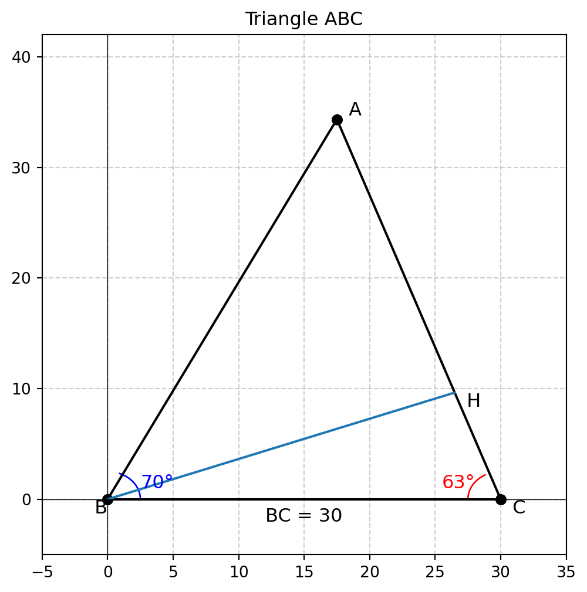

正弦定理の考え方
Exercise 1
\(BC = 30, \angle B = 70^\circ, \angle C = 63^\circ\) となるような \(\triangle ABC\) が与えられたとします．このとき，長さ \(AB\) を求めよ
設問の \(\triangle ABC\) を図示すると以下のようになります．\(B\) から \(AC\) に対して垂線を垂らし，その交点を \(BH\) とします．
Code
import numpy as np
import matplotlib.pyplot as plt
import matplotlib.patches as patches
def plot_triangular(base_length: float, angles: tuple, fig_size=(6,6)):
# Given values
BC = 30 # Side BC
angle_B = np.radians(angles[0]) # Convert degrees to radians
angle_C = np.radians(angles[1]) # Convert degrees to radians
# Calculate angle A
angle_A = np.radians(180 - sum(angles))
# Use Law of Sines to find AB and AC
AB = BC * np.sin(angle_B) / np.sin(angle_A)
AC = BC * np.sin(angle_C) / np.sin(angle_A)
# Set points in a 2D coordinate system
B = np.array([0, 0]) # Point B at the origin
C = np.array([BC, 0]) # Point C on the x-axis
# Calculate A's coordinates using trigonometry
A_x = BC - AC * np.cos(angle_B) # Projection of AC on x-axis
A_y = AC * np.sin(angle_B) # Height of A
A = np.array([A_x, A_y])
# Plot the triangle using ax
fig, ax = plt.subplots(figsize = fig_size)
ax.plot([A[0], B[0]], [A[1], B[1]], 'ko-') # Black line with circle markers
ax.plot([B[0], C[0]], [B[1], C[1]], 'ko-') # Black line with circle markers
ax.plot([C[0], A[0]], [C[1], A[1]], 'ko-') # Black line with circle markers
# Annotate points
ax.text(A[0], A[1], ' A', fontsize=12, verticalalignment='bottom')
ax.text(B[0], B[1], ' B', fontsize=12, verticalalignment='top', horizontalalignment='right')
ax.text(C[0], C[1], ' C', fontsize=12, verticalalignment='top', horizontalalignment='left')
# Add angles as arcs
arc_radius = 5 # Radius for the arcs
# Angle at B
angle_B_arc = patches.Arc(B, arc_radius, arc_radius, angle=0, theta1=0, theta2=np.degrees(angle_B), color='blue')
ax.add_patch(angle_B_arc)
ax.text(B[0] + arc_radius/2, B[1] + 1, f"{70}°", fontsize=12, color='blue')
# Angle at C
angle_C_arc = patches.Arc(C, arc_radius, arc_radius, angle=0, theta1=180 - np.degrees(angle_C), theta2=180, color='red')
ax.add_patch(angle_C_arc)
ax.text((C[0] - arc_radius/2) - 2, C[1] + 1, f"{63}°", fontsize=12, color='red')
return fig, ax, (A, B, C)
# plot
fig, ax, coordinates = plot_triangular(30, (70, 63))
# add BH
slope = -1/((coordinates[2][1] - coordinates[0][1])/(coordinates[2][0] - coordinates[0][0]))
ax.plot((0, 26.5), (0, slope * 26.5))
ax.text(26.5, slope * 26.5, ' H', fontsize=12, verticalalignment='top', horizontalalignment='left')
# add labels
ax.text(15, -2, "BC = 30", fontsize=12, color='black', horizontalalignment='center')
ax.axhline(0, color='black',linewidth=0.5)
ax.axvline(0, color='black',linewidth=0.5)
ax.grid(True, linestyle='--', alpha=0.6)
ax.set_xlim(-5, 35)
ax.set_ylim(-5, 42)
ax.set_title("Triangle ABC")
plt.show()\(\triangle BCH, \triangle ABH\) を考えると，
\[ \begin{align} BH &= \sin( A) * AB\\ BH &= \sin( C) * BC \end{align} \]
これを整理すると
\[ \begin{align} AB &= \frac{\sin(C) * BC}{\sin A}\label{eq-law-of-sines-1}\\ &= \frac{30 \cdot \sin(63^\circ)}{\sin(47^\circ)}\label{eq-law-of-sines-2} \end{align} \]
従って，
Code
print(f"BC = {30 * np.sin(63/180 * np.pi)/np.sin(47/180 * np.pi):.4f}")BC = 36.5489と計算されます．
正弦定理の証明
\(\eqref{eq-law-of-sines-1}\), \(\eqref{eq-law-of-sines-2}\) を整理すると
\[ \frac{AB}{\sin A} = \frac{BC}{\sin C} \]
を得ます．同様の方法で \(AC\) を求めて整理すると，
\[ \frac{AB}{\sin A}= \frac{AC}{\sin B} = \frac{BC}{\sin C} \]
これは，\(\triangle ABC\) の外接円を考えたとき，その外接円の半径を \(R\) としたとき
\[ \frac{AB}{\sin A}= \frac{AC}{\sin B} = \frac{BC}{\sin C} = 2R \]
という正弦定理へ繋がります．
▶ 対辺と\(\sin\) の比率が直径 \(2R\)に一致する証明
Code
import numpy as np
import matplotlib.pyplot as plt
# 与えられた条件
BC = 30 # 辺BC
angle_B = np.radians(70) # 角B (ラジアン変換)
angle_C = np.radians(63) # 角C (ラジアン変換)
# 角Aを計算
angle_A = np.radians(180 - (70 + 63))
# 正弦定理を使ってABとACを求める
AB = BC * np.sin(angle_B) / np.sin(angle_A)
AC = BC * np.sin(angle_C) / np.sin(angle_A)
# 頂点座標
B = np.array([0, 0]) # Bを原点に配置
C = np.array([BC, 0]) # Cをx軸上に配置
A_x = BC - AC * np.cos(angle_B) # Aのx座標
A_y = AC * np.sin(angle_B) # Aのy座標
A = np.array([A_x, A_y])
# 垂直二等分線の交点（外心）を求める
def circumcenter(A, B, C):
D = 2 * (A[0] * (B[1] - C[1]) + B[0] * (C[1] - A[1]) + C[0] * (A[1] - B[1]))
Ux = ((A[0]**2 + A[1]**2) * (B[1] - C[1]) + (B[0]**2 + B[1]**2) * (C[1] - A[1]) + (C[0]**2 + C[1]**2) * (A[1] - B[1])) / D
Uy = ((A[0]**2 + A[1]**2) * (C[0] - B[0]) + (B[0]**2 + B[1]**2) * (A[0] - C[0]) + (C[0]**2 + C[1]**2) * (B[0] - A[0])) / D
return np.array([Ux, Uy])
circumcenter_point = circumcenter(A, B, C)
radius = np.linalg.norm(A - circumcenter_point) # 外接円の半径
# 円周上の点P（円周角を示す）
theta_P = np.radians(120) # 任意の角度 (120°)
P_x = circumcenter_point[0] + radius * np.cos(theta_P)
P_y = circumcenter_point[1] + radius * np.sin(theta_P)
P = np.array([0, 30/np.sin(angle_A) * np.sin(np.pi/2 - angle_A)])
# 図を作成
fig, ax = plt.subplots(figsize=(6,6))
# 三角形ABCをプロット
ax.plot([A[0], B[0]], [A[1], B[1]], 'bo-', label="AB")
ax.plot([B[0], C[0]], [B[1], C[1]], 'ro-', label="BC")
ax.plot([C[0], A[0]], [C[1], A[1]], 'go-', label="CA")
# 外接円をプロット
circle = plt.Circle(circumcenter_point, radius, color='cyan', fill=False, linestyle='dashed', label="Circumcircle")
ax.add_patch(circle)
# 円周角を示す点Pと三角形BPC
ax.plot([B[0], P[0]], [B[1], P[1]], 'purple', linestyle='dotted', label="BP")
ax.plot([C[0], P[0]], [C[1], P[1]], 'purple', linestyle='dotted', label="CP")
# 点のラベル
ax.text(A[0], A[1], ' A', fontsize=12, verticalalignment='bottom')
ax.text(B[0], B[1], ' B', fontsize=12, verticalalignment='top', horizontalalignment='right')
ax.text(C[0], C[1], ' C', fontsize=12, verticalalignment='top', horizontalalignment='left')
ax.text(P[0], P[1], ' P', fontsize=12, verticalalignment='bottom', horizontalalignment='right', color='purple')
ax.scatter(circumcenter_point[0], circumcenter_point[1], color='black') # 外心O
# グリッドと範囲設定
ax.axhline(0, color='black', linewidth=0.5)
ax.axvline(0, color='black', linewidth=0.5)
ax.grid(True, linestyle='--', alpha=0.6)
ax.set_xlim(-radius-5, BC+radius+5)
ax.set_ylim(-radius-5, radius+AC+5)
ax.legend()
ax.set_title("Triangle ABC with Circumcircle and Inscribed Angle")
# 図を表示
plt.show()例題: 山の高さを求める
Exercise 2
とある山へハイキングにいくとします．
- 山頂をC
- 山の麓のA地点から同じ標高で直線距離で1000m離れている地点をB
- A地点からCを見たときの仰角は \(30^\circ\)
- \(\triangle ABC\) について，\(\angle CAB = 75^\circ, \angle ABC = 45^\circ\)
ということがわかっているとします．このとき，Cの標高を求めよ．なお，\(A, B\) の標高は 0m とする．
Code
import numpy as np
import matplotlib.pyplot as plt
from mpl_toolkits.mplot3d.art3d import Poly3DCollection
# Given angles and side lengths
angle_A = np.radians(75)
angle_B = np.radians(45)
AB = 1000 # Given
# Compute angle C
angle_C = np.radians(180 - 75 - 45) # C = 60 degrees
# Compute sides using the Law of Sines
BC = AB * np.sin(angle_A) / np.sin(angle_C)
AC = AB * np.sin(angle_B) / np.sin(angle_C)
# Compute coordinates of A, B, and C
A = np.array([0, 0, 0]) # A is the origin
B = np.array([AB, 0, 0]) # B is along the x-axis
C_x = 0 # Projection of AC on x-axis
C_y = AC * np.cos(np.radians(30))
C_z = AC * np.sin(np.radians(30)) # Projection on y-axis
C = np.array([0, C_y, C_z]) # C remains in the XY plane
# Triangle ACH: Given CAH = 30°, CHA = 90° (Right Triangle)
angle_CAH = np.radians(30)
# H's coordinates (directly above C in the Z direction)
H = np.array([0, C_y, 0])
# Create 3D plot
fig = plt.figure(figsize=(8, 8))
ax = fig.add_subplot(111, projection='3d')
# Plot edges of tetrahedron
edges = [
(A, B), (B, C), (C, A), # Triangle ABC
(A, H), (C, H), (B, H) # Connecting H to A, C, and B
]
for edge in edges:
ax.plot(*zip(*edge), 'k-')
# Define faces for tetrahedron visualization
faces = [
[A, B, C], # Base ABC
[A, C, H], # Side ACH
[C, B, H], # Side CBH
[A, H, B] # Side AHB
]
# Add face shading
ax.add_collection3d(Poly3DCollection(faces, alpha=0.3, color='cyan'))
# Annotate points
ax.text(*A, " A", color='black', fontsize=12)
ax.text(*B, " B", color='black', fontsize=12)
ax.text(*C, " C", color='black', fontsize=12)
ax.text(*H, " H", color='black', fontsize=12)
# Labels and grid
ax.set_xlabel("X-axis")
ax.set_ylabel("Y-axis")
ax.set_zlabel("Z-axis")
ax.set_title("3D Tetrahedron CAHB")
ax.grid(True)
ax.view_init(elev=20, azim=-55)
# Show the plot
plt.show()